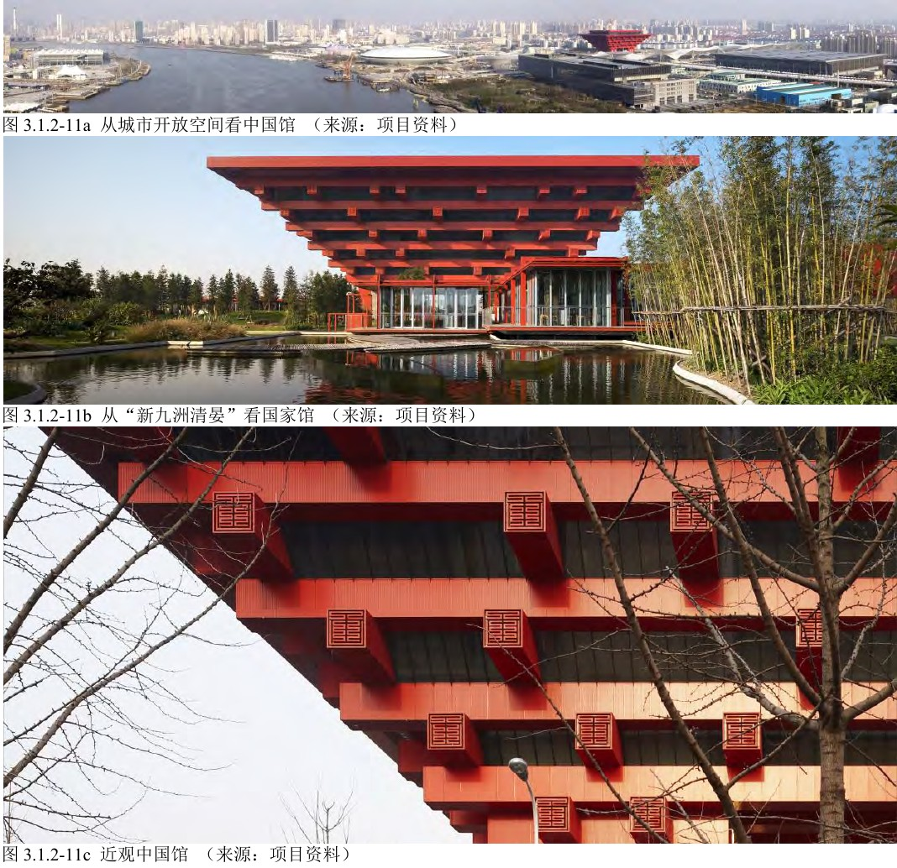
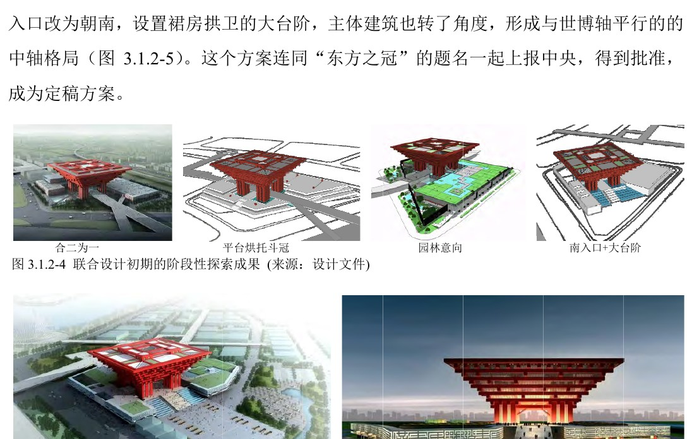
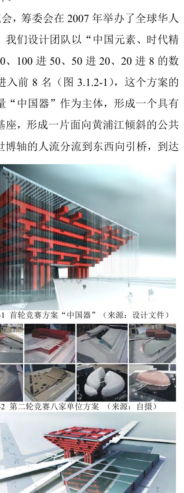
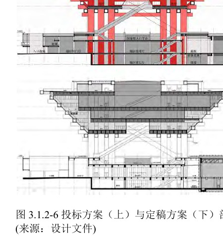
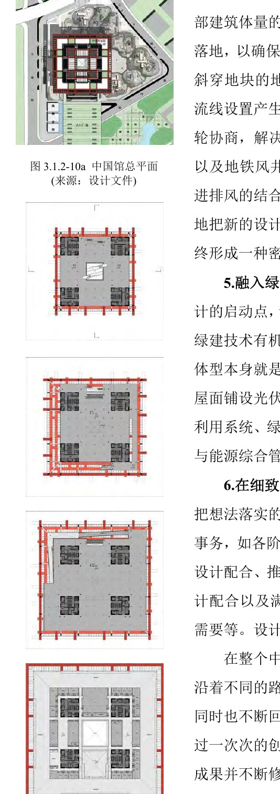
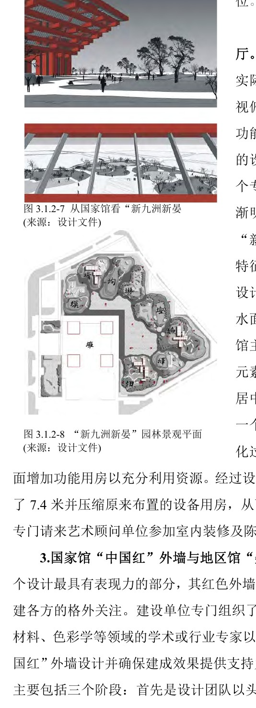
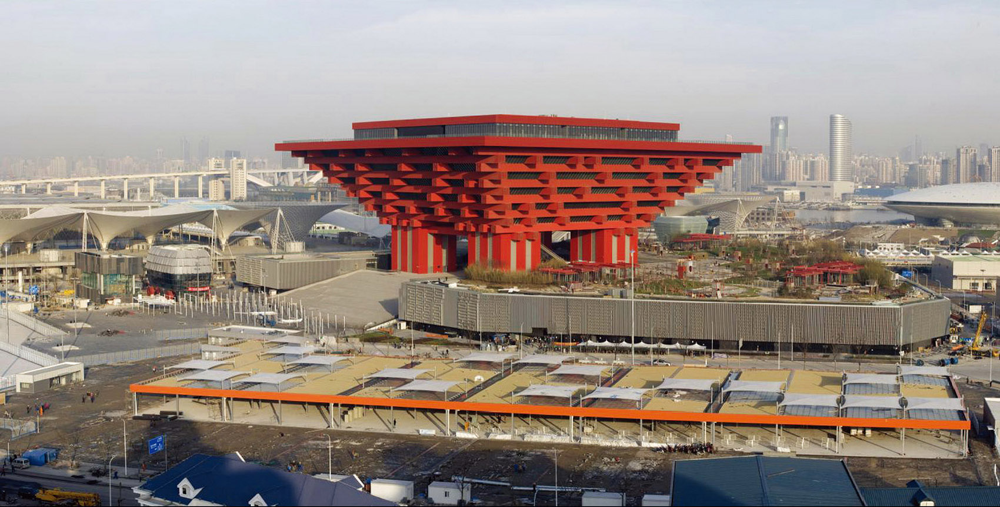

01 上海世博会中国馆 / 中国2010年上海世博会中国国家馆 中国馆把国家象征、世博大客流、展陈平层需求、屋顶园林、红色幕墙试板和地铁下穿约束组织成从概念到建造连续桥接的文化展示建筑。Culturalexposition pavilion 从城市开放空间、新九洲清晏和近观视角看中国馆
02 基本信息 项目内容项目名称上海世博会中国馆 / 中国2010年上海世博会中国国家馆英文名称China Pavilion for Expo 2010 Shanghai / China Pavillion for Shanghai World Expo 2010建筑师 / 事务所联合设计团队：何镜堂团队、清华大学团队、上海民用建筑设计院等；PDF 强调广州、北京、上海三地建筑师合作地点上海世博园区，浦东上南路 205 号一带建成 / 开放2007 年竞赛与开工；2010 年上海世博会使用；2012 年 10 月 1 日改作中华艺术宫开放建筑类型国家展馆、文化展示建筑、世博后再利用美术馆建筑面积约 16 万平方米；Area 页面给出 160,126 平方米，中华艺术宫公开资料也以约 16 万平方米为常见口径建筑高度当前包未用一手资料稳定确认；公开资料常见 63 米口径，正式引用前需复核结构体系PDF 提到地铁线下穿处需结构转换并跨越安全范围落地；完整结构体系未在 PDF 中系统披露主要材料红色铝板“中国红”外墙、浅灰铝合金方管“叠篆”百叶、玻璃、屋面光伏与绿化屋面等后续状态世博会后保留并改造为中华艺术宫（上海美术馆）摄影 / 图纸来源PDF 图注含设计文件、项目资料；Area 图片注明 Shen Zhong Hai 摄影信息可信度高。身份、设计过程、核心策略、主要材料和后续使用可多源确认；结构、节点和高度需补充专项资料指标说明：高度、容积率、建筑密度、完整结构系统、施工节点详图等高精度信息未在当前资料中完整确认，不作推测。
03 资料质量与证据密度 资料状态：sufficient是否有一手资料：是。PDF 包含设计竞赛、方案整合、剖面调整、外墙专项、地铁下穿、绿色技术和建造配合等过程性资料。建筑专业媒体数量：3。Area、ArchDaily、gooood 可补充事实、摄影和传播背景。图片处理状态：completed。已从 PDF 渲染并整理 7 张分析页。已覆盖分析项：concept / context / program / circulation / facade_material / structure_construction / user_experience / urban_relationship资料最充分方向：概念生成、方案整合、空间功能调整、中国红外墙、叠篆外墙、屋顶园林、地铁下穿与绿色技术。资料不足方向：施工节点详图、结构计算体系、造价、长期运营评价、中华艺术宫改造阶段的内部空间变更细节。
04 一句话判断 中国馆最值得学习的是：在一个高度公共化、政治文化象征极强的项目中，设计团队没有停留在“东方之冠”的图像，而是通过入口轴线、展陈平层化、观景坡道、屋顶园林、外墙足尺试板和地铁下穿结构应对，把象征、功能、城市、人流和建造逐步桥接成可落地的建筑系统。 从城市开放空间、新九洲清晏和近观视角看中国馆联合设计初期阶段探索与定稿方案“东方之冠”
05 场地信息表 场地维度与设计回应相关的信息场地区位上海世博园区核心展馆，西侧与世博轴联系紧密人文环境首次在中国举办的世博会，项目成为全国性公共关注事件交通关系竞赛阶段主入口曾连接西侧世博轴，定稿阶段改为南入口与大台阶，形成更强礼仪感地下条件已建成地铁线从地块西北角下穿并设站厅，对结构、地下空间和人流组织形成约束服务人群世博会期间大客流参观者、国家馆与地区馆观众；后续为中华艺术宫观众场地核心矛盾需要同时回应国家象征、超大客流、展陈灵活性、世博轴人流、地铁既有设施和世博后运营
06 诊断 来源明确：PDF 指出中国馆从设计竞赛开始就是“全过程都受到社会广泛关注的公众事件”。竞赛共收到 344 个方案，最终形成何镜堂团队方案与清华大学方案并列第一，再由广州、北京、上海三地团队联合推进。基于资料的归纳判断：项目的设计问题不是单纯的展馆形象，而是如何在国家形象、世博主题、展陈运营、超大客流与永久保留之间建立可被社会共同接受的建筑解答。设计过程中的“社会意志”直接塑造了方案走向。 首轮竞赛“中国器”和第二轮竞赛过程
07 定位 来源明确：设计团队最初以“中国元素、时代精神”为定位参赛；建设单位认为“中国器”名称不够有分量，后续提炼出“东方之冠、鼎盛中华”的主题。南入口、大台阶和中轴格局则回应了“坐北朝南”的文化传统和国家馆礼仪性。基于资料的归纳判断：定位经历了从“器物原型”到“国家礼仪建筑”的转译。形体仍保留层层出挑、架空升起的核心构成，但表达从较抽象的“中国器”转向更具传播力的“东方之冠”。
08 策略 策略：以国家馆主体的象征形体作为核心，地区馆作为基座和公共平台，再通过南入口大台阶、屋顶园林和展陈空间调整补足城市性、公共性和功能性。回应的问题：仅有强图像不足以支撑完整展馆；展陈需要平层大空间，地区馆需兼顾会中和会后使用，超大客流需要交通集散和疏散平台，城市展示需要远观与近观均成立。对空间 / 形式 / 建造的影响：国家馆从竞标阶段的螺旋平台调整为较集中的三层平层大空间；观景坡道转移体验重心；地区馆屋顶成为“新九洲清晏”园林平台；外墙专项从图像表达进入材料试板和分模数控制。
09 意象与表达 来源明确：中国馆主题为“东方之冠、鼎盛中华”。国家馆层层出挑，形成类似斗冠/斗拱的强象征；地区馆“叠篆”百叶以二十四节气名称替代地区和朝代名称，减少争议并加强文化普适性。基于资料的归纳判断：这个项目的符号系统不是单一图案，而是由冠、鼎、斗拱、红色、叠篆、九洲园林、南向礼仪入口共同构成的多层叙事。
10 功能梳理 来源明确：PDF 说明，国家馆竞标阶段原为空间连续的螺旋上升平台和通高中庭；展陈团队提出需要更多平层大空间后，建筑团队将其调整为较集中的三层平层大空间，并缩减中庭规模。地区馆则需为 36 个省市自治区提供均好展位，并兼顾世博会后使用。基于资料的归纳判断：功能不是被动填充，而是反过来校正形体。中国馆最重要的空间调整正是由展陈需求触发，设计团队用外围观景坡道保留建筑体验和城市眺望，使功能调整不削弱概念。 投标方案与定稿方案剖面对比
11 布局逻辑 来源明确：早期方案主入口引桥连接西侧世博轴，定稿阶段根据坐北朝南和礼仪性要求改为南入口、大台阶和与世博轴平行的中轴格局。地区馆作为水平基座支撑国家馆，既承担展陈空间，也承担交通集散与会后运营。基于资料的归纳判断：中国馆的布局是“礼仪轴线 + 水平平台 + 居中升起主体”的组合。南入口强化国家馆的正面性，水平基座处理大客流和地区展馆，国家馆主体则负责远距离识别和垂直体验。 中国馆总平面、平面图和绿色技术说明
12 形式构成 来源明确：国家馆以层层出挑、架空升起的构成体量作为主体，形成城市蔽护体；地区馆作为基座和公共平台，面向黄浦江倾斜展开。后续整合中主体造型基本未改，说明其对象征性约束的回应已被多方接受。基于资料的归纳判断：形式构成采用“上重下轻”的反常规表达：巨大主体被架空，借由出挑和大柱形成纪念性，同时释放底层公共空间；地区馆以水平基座稳定主体，并以园林与灰调叠篆外墙柔化国家馆的强烈象征。
13 场所与氛围 来源明确：地区馆屋面约 2.7 万平方米，承担疏散和交通集散，同时被国家馆俯瞰，因此成为专题设计。团队最终用“新九洲清晏”把代表性地貌、皇家园林园中园布局、起伏地貌、高低树木、宽窄水面、小桥曲径和集散场地融合。基于资料的归纳判断：“新九洲清晏”不是装饰性景观，而是把水平基座从交通屋面转化为可被观看、可被行走、可承载人流的文化场景，与国家馆的刚性红色主体形成刚柔对仗。 从国家馆看新九洲清晏及园林景观平面
14 建造语言 来源明确：PDF 明确记录了地铁线下穿对结构转换、地下空间、公共流线和地铁风井的影响。地铁线从地块西北角穿过，设计需使结构跨过地铁线周边安全范围落地，并把地铁风井与中国馆四根大柱中的一根结合。基于资料的归纳判断：地铁约束迫使项目从象征性形体进入精密的工程连接。中国馆不是一件孤立雕塑，而是与既有城市基础设施形成共生状态。
15 材料与工艺 来源明确：“中国红”外墙专项历时近 8 个月，建设单位组织建筑、幕墙、灯光、材料、色彩学等专家参与。团队从金属板、玻璃、亚克力、陶板，多种肌理和复合表皮中筛选，最终确定纹理宽 4.2 厘米、深约 2.5 厘米、纹理均匀的红色铝板；外墙划分按构架完成面尺寸 2.7 米的分模数控制。基于资料的归纳判断：红色不是简单涂装，而是通过材料、肌理、观看距离、白天夜晚效果、灯光和施工样板共同确定的建造结果。 中国红外墙设计探索和试板过程
16 构造逻辑 来源明确：地区馆“叠篆”外墙由红色改为浅灰色，以衬托国家馆主体；材料由可降解塑料改为铝合金方管；叠篆文字由地区与朝代名称改为二十四节气。国家馆红色构架端头也处理成叠篆百叶，分别篆刻“东、南、西、北”，部分端头百叶用作空调进出风口。基于资料的归纳判断：叠篆百叶把文字、遮蔽、通风、尺度和文化表达合为一体。它不是表面贴字，而是通过构件尺度、间隔疏密和连接工艺进入外墙系统。
17 性能与施工控制 来源明确：绿色技术被作为专题融入建筑本体：国家馆架空升起和层层出挑形成自遮阳体型，并带来自然通风架空层；屋面铺设光伏板；其他措施包括雨水收集利用、绿化屋面、透水地面、冰蓄冷技术、建筑设备与能源综合管理系统。基于资料的归纳判断：中国馆的绿色策略与形体高度相关。层层出挑本身同时服务象征、遮阳和公共架空空间，说明绿色技术不是附加设备，而是与体量语言绑定。
18 方法 1：在公众事件中把“社会意志”转译成设计结构 面对的问题：国家级世博展馆承载超高社会期待，单一设计团队或单一概念难以完成共识建构。具体做法：通过竞赛、并列第一、联合设计和多轮汇报，把不同方案资源整合为“东方之冠”的最终主题。建筑效果：方案获得更强公共传播力和政治文化识别度，同时保留国家馆主体的强象征。可迁移方法：重大公共项目要识别决策网络，把社会期待转译为空间、入口、主题和建造专题，而不是只防守方案完整性。
19 方法 2：用礼仪轴线增强象征建筑的公共进入 面对的问题：早期西入口连接世博轴有效，但礼仪性和国家馆正面性不足。具体做法：主入口改为南向，设置裙房拱卫的大台阶，并形成与世博轴平行的中轴格局。建筑效果：国家馆从展馆入口转化为更具仪式感的城市公共建筑入口。可迁移方法：象征建筑的入口策略应同时处理人流效率、文化方位和公共仪式感。
20 方法 3：让展陈需求倒逼剖面重组 面对的问题：螺旋平台和通高中庭概念强，但展陈团队需要平层大空间。具体做法：将国家馆调整为三层集中平层大空间，缩减中庭，并在功能平面与外墙构架之间设置观景坡道。建筑效果：保留展馆运营效率，同时把体验重心转向外围观景，使中国馆成为世博园区观景阁。可迁移方法：功能调整不必削弱概念，可通过剖面和边界空间重组，把被放弃的体验转移到新的空间载体。
21 方法 4：把屋顶平台从交通空间转化为文化场景 面对的问题：地区馆屋面既被国家馆俯瞰，又承担大客流疏散和集散。具体做法：以“新九洲清晏”为主题组织地貌、水面、树木、桥径和集散场地。建筑效果：屋顶平台成为可观看、可行走、可疏散的文化景观，与国家馆主体形成刚柔对仗。可迁移方法：大体量公共建筑的屋面可作为第二地面处理，兼容疏散、景观、叙事和视觉背景。
22 方法 5：用足尺试板把颜色变成构造决策 面对的问题：“中国红”必须经典、庄重，并在远观近观、白天夜晚都成立。具体做法：组织专家委员会和幕墙企业进行四轮 1:1 挂板实验，从一百多种样板筛选到最终红色铝板，并用 2.7 米分模数控制外墙划分。建筑效果：红色外墙从符号诉求转化为可施工、可维护、可被观看距离验证的幕墙系统。可迁移方法：对建筑识别度有决定作用的颜色和表皮，应通过样板、模数、灯光和观看距离共同定板。
23 对我的设计启发 可迁移方法 1：重大公共建筑的设计不是孤立作者表达，而是对社会共同愿景的专业组织。可迁移方法 2：强象征形体必须继续接受功能、交通、运营和建造专题的检验。可迁移方法 3：展陈建筑要把“可布展的平层大空间”和“可记忆的空间体验”同时纳入剖面设计。可迁移方法 4：屋顶平台可以承担人流疏散、文化叙事、城市观看和绿色策略，不应只当作第五立面。可迁移方法 5：颜色、肌理和文字表皮要转化为构件、模数、连接和风口等真实系统。不适合直接照搬的部分：“东方之冠”“中国红”“斗冠/斗拱”高度绑定世博国家馆语境，不能作为一般文化建筑的通用符号。可转化成的分析图：竞赛整合流程图、南入口礼仪轴线图、国家馆剖面调整图、屋顶平台复合功能图、中国红外墙试板决策图、地铁下穿与结构跨越关系图。
24 信息缺口与冲突 项目英文名拼写存在差异：ArchDaily 页面题名写作 “China Pavillion”，更常见英文为 “China Pavilion”。面积口径：Area 与中华艺术宫公开资料均指向约 16 万平方米量级，但不同资料对中国馆、地区馆、中华艺术宫改造后的展陈面积可能有不同统计口径。高度口径：公开资料常见 63 米，但当前包未找到可直接对应设计图纸或官方技术表的稳定一手来源，故未在基本表中确认为高可信指标。结构体系：PDF 提到地铁下穿结构转换和大柱结合风井，但完整结构体系、节点构造和施工过程仍需专项工程资料补充。后续改造：中华艺术宫作为后续使用可确认，但改造阶段的内部空间调整、展厅数量口径和运营评价未在本包中展开。
25 Reference Sources 上海世博会中国馆.pdf用户提供 PDF / 博士论文项目实践章节中华艺术宫官方网站中华艺术宫（上海美术馆）China PavilionAreaChina Pavillion for Shanghai World Expo 2010ArchDailygooood Interview NO.17 – He Jingtanggooood